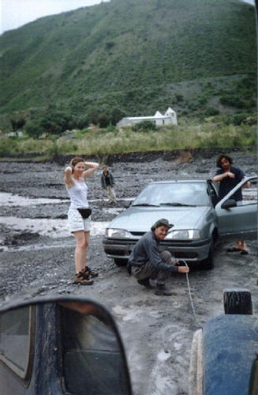
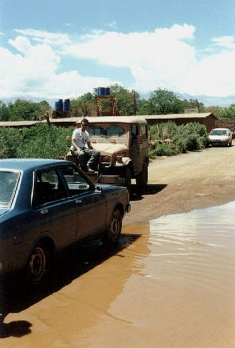
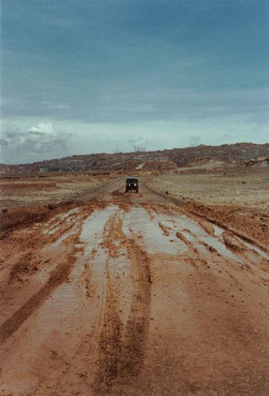
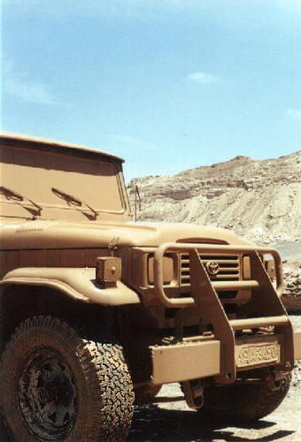
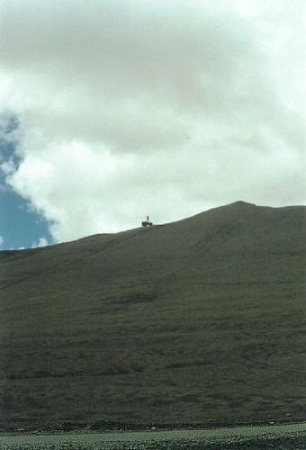
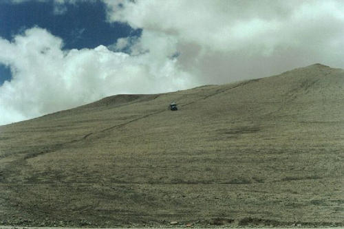
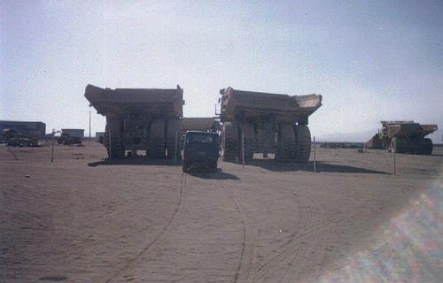

Esta seção é dedicada a nossa companheira inseparável, nas alegrias e nas horas difíceis, nosso transporte, nossa proteção, nossa casa, nosso lar: a Toyota Bandeirante.
Como não poderia deixar de ser, fizemos alguns reboques em carros não-4x4 que encalhavam pelo caminho...

Rebocando dois franceses perdidos
Local: Estrada de Salta para s.a. Cobres - ARGENTINA - 2001

Rebocando morador de San Pedro
Local: San Pedro de Atacama - CHILE - 2001
Como ela também precisava se divertir, não deixamos a poçinha passar em branco. Preparando para o banho de lama... VAI!
 
Preparando para o embelezamento, e depois: sabor chocolate
Local: San Pedro de Atacama - CHILE - 2001
Em 2000, eu e o márcio olhamos para essa montanha na beira da estrada, e como uma face tinha um ângulo de inclinação pequeno, tentamos subi-la com o carro. Foi uma tentativa tímida e burra, tentando subir fazendo um trajetória reta :)
Em 2001, foi o hora da revanche. Com mais tempo disponível e mais experiência, eu e o Roberval subimos a montanha fazendo zigue-zague com o carro no 4x4, na reduzida, em primeira marcha e soltando fumaça! O Júnior ficou na estrada para fazer o registro fotográfico da façanha.
A subida demorou cerca de 3 a 5 minutos e perto do topo o carro já começava a querer deslizar de lado, foi massa!! Após minutos de contemplação da paisagem, a descida foi tranqüila, apenas com o carro segurado na marcha, descemos em linha reta.


No topo e descendo a montanha
Local: Estrada de passo de sico para San Pedro - CHILE - 2001
Esses "caminhõezinhos" são utilizados para o transporte de minérios. Como nessa região árida a agricultura não tem vez, a principal fonte de riquezas aqui é a extração mineral, principalmente de cobre. Note que a Toyota é menor que o pneu do caminhão!

Caminhões gigantes ao lado da Toyota
Local: Estrada de antofagasta para a rota panamericana - CHILE - 2000